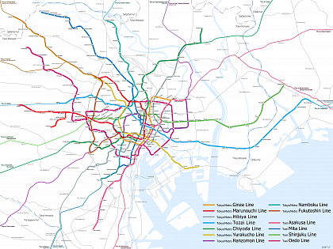

Территория Страны восходящего солнца совсем невелика, однако разнообразие ландшафтов и возможностей для отдыха делает её чрезвычайно привлекательной для любителей горнолыжного спорта и пляжного отдыха, для ценителей искусства и тех, кому небезразлично мировое культурное наследие. Каждый найдёт себе здесь занятие по душе.
Неофициальное название Японии, часто встречающееся в прессе – Страна восходящего солнца. Сами японцы широко используют в обиходе название «Нихон», которое переводится как «родина Солнца». Дневное светило лишь однажды, в далеком 1945 году, померкло над Хиросимой и Нагасаки – двумя городами, ставшими мишенями для американских атомных бомб, унесших тысячи жизней. Таким образом, Япония сегодня – единственное государство на планете, против которого применено ядерное оружие. Пережив эту страшную трагедию, она всё же смогла воспрянуть, построив с годами сильную экономику. По уровню жизни, согласно индексу человеческого развития (ИЧР), Япония занимает 10-е место, опережая Канаду, Республику Корея и Гонконг и уступая Швейцарии, Швеции и Ирландии.
Япония — островное государство в Восточной Азии, располагающееся на большом стратовулканическом архипелаге протяженностью более 3 000 км, находящимся у тихоокеанского побережья Азии.Самые крупные: Хонсю, Хоккайдо, Кюсю и Сикоку, составляющие 97% всей территории. Японский архипелаг берет свое начало от Охотского моря на севере и простирается далеко на юг до Восточно-Китайского моря и острова Тайвань.
Климат
Благодаря своей протяженности, Япония пролегает в четырех климатических зонах. Зимой в северной части выпадают осадки в виде снега, среднесуточная температура держится на отметке 0°С. В центральной части зима мягкая и солнечная, выпадающий снег быстро тает. На южных островах зимой тепло и нет снега. Лето дождливое, воздух прогревается до +30°С. С июня начинается сезон тайфунов. Япония – одна из стран с самой большей влажностью (местами она достигает 100%). В год тут выпадает более 1700 мм осадков. Пик туристического сезона приходится на март-апрель, когда цветет сакура.
Япония – это страна, которая тщательно и бережно хранит и лелеет свои традиции и культуру. Эта страна завораживающая и не всегда понятная для европейцев. Географическое положение, особенности государственной политики и древние традиции ее народа привели к некоторой ее изолированности от других стран. В силу этого культура Японии и японская эстетика имеют ярко выраженные черты, отличающие их от того, что можно увидеть в других странах. Cегодня Япония единственное государство в мире, против которого было использовано ядерное оружие. Но она смогла восстановиться, с годами выстроив сильную экономику, и сегодня занимает 10 место по уровню жизни Только здесь по сей день правителя называют императором. Современные японцы очень успешны не только в экономике, но и в науке, биомедицине, робототехнике, высоких технологиях.
Боевые исскуства как часть японской культуры
Истоки боевых искусств в Японии можно проследить до роли самураев, класса воинов, в средневековом японском обществе. Самураи являлись элитным звеном в иерархии, были хорошо обучены боям, их самым ценным достоянием была их чрезвычайно острая «катана» (японские мечи). Тем не менее, этим самураям не просто вручили меч, ожидая, что они будут знать, как им пользоваться, а вместо этого самураи должны были пройти тщательную подготовку, чтобы иметь возможность правильно владеть им. Философия, которой следовали эти самураи, называлась «бусидо» или «путь воина». Применяя принципы бусидо (бережливость, честность, честь и владение боевыми искусствами) в свои тренировки и повседневную жизнь, они смогли дисциплинировать себя во многих аспектах. Хотя класс самураев был упразднен в период Мэйдзи (1868-1912), уважение к моральному кодексу осталось, и многие люди сегодня практикуют боевые искусства, чтобы тренировать свое тело и ум.
Боевая подготовка знаменует собой начало боевых искусств. Они практиковалось, чтобы узнать, как бороться без оружия и использовать собственное тело противника против него. «До» в конце слова «бусидо» является распространенным суффиксом в японском языке, который напрямую переводится как «путь». Это подразумевает, что умственная и физическая дисциплина необходимы для изучения деятельности, поэтому многие боевые искусства имеют это как суффикс в конце их имен. «До» также может символизировать «способ», которым должно выполняться боевое искусство - например, дзюдо (мягкий путь) и айкидо (путь гармоничного духа). Практики проводились в разных «додзё», это слово буквально переводится как «место на пути» и до сих пор используется для обозначения большинства мест для занятий боевыми искусствами.
Джиу-Джитсу
Каратэ
Айкидо
Кэндо
Кудо
Кобудзюцу
Дзюдо
Сумо
Аниме как часть японской культуры
На сегодняшний день культура Японии включает в себя обилие разнообразных субкультурных направлений, влияющих на формирование общественного сознания японского народа. Среди них совершенно особое место занимает такое молодежной направление как аниме, представляющее собой особый стиль японской мультипликации, который обладает определенными эстетическими и стилистическими особенностями. И хотя общепризнанно, что сам термин «аниме» заимствован, но сокращен до трёх слогов от английского слова «animation» — анимация, что означает быструю смену изображений с целью создания эффекта движения, считается, что употребление данного названия применимо исключительно для культуры Японии.
В отличие от мультфильмов других стран, предназначенных в основном для просмотра детьми, бо́льшая часть выпускаемого аниме рассчитана на подростковую и взрослую аудитории, и во многом за счёт этого имеет высокую популярность в мире. Аниме отличается характерной манерой отрисовки персонажей и фонов. Издаётся в форме телевизионных сериалов, а также фильмов, распространяемых на видеоносителях или предназначенных для кинопоказа. Сюжеты могут описывать множество персонажей, отличаться разнообразием мест и эпох, жанров и стилей. Источниками для сюжета аниме-сериалов чаще всего являются: манга (японские комиксы), ранобэ (лайт-новел) или компьютерные игры (как правило, в жанре «визуальный роман»). При экранизации обычно сохраняется графический стиль и другие особенности оригинала. Реже используются другие источники, например, произведения классической литературы. Есть также аниме, имеющие полностью оригинальный сюжет (в этом случае уже само аниме может послужить источником для создания по нему книжных и манга-версий).
Токио, столица Японии, ошеломляет туристов буквально с первых мгновений, как только нога путешественника ступает на его землю. Кажется, здесь всё не так, как в других городах: и невероятно сложная планировка кварталов, и запутанные линии метро, которые воспринимаются как не связанные друг с другом, и сплошные джунгли из проводов городских коммуникаций. Мегаполис является крупнейшим экономическим, политическим, финансовым, образовательным и культурным центром современной Страны восходящего солнца. Кроме того, Токио — самый крупный город в Японии и один из самых густонаселённых в мире. Этот город достаточно молод — ему всего-то чуть более пяти сотен лет. За свою относительно недолгую историю он успел сменить имя, пережить разрушительные землетрясения, пожары и даже войну. Некогда бывший скромной рыбацкой деревушкой под названием Эдо, расположенной рядом с одноимённым феодальным замком, Токио стал столицей страны в XVII веке. С тех пор город активно рос и развивался, получив своё нынешнее имя: Токио в переводе с японского означает «Восточная столица».
Туризм
Токио — рай для шопоголиков, в его магазинах и торговых центрах можно купить практически всё, начиная с самых современных гаджетов и заканчивая одеждой и аксессуарами известных мировых брендов. Также Токио — город, который никогда не спит: здесь кипит ночная жизнь в модных барах и ресторанах, ночных клубах и экстравагантных стрип-барах — на любой вкус и кошелек. Туристы признаются: этот город неоновых реклам, небоскрёбов и старинных храмов не может оставить равнодушным никого. Вернувшись из Токио, они вновь и вновь хотят ощутить дух города, опередившего время, и окунуться в атмосферу самого настоящего мегаполиса будущего.

Метро
Самым популярным видом транспорта и у токийцев, и у гостей города является метро. Метро в Токио считается самым загруженным в мире, ежегодно его услугами пользуется свыше трёх миллиардов человек. В нем насчитывается 13 линий и 274 станции. Особенно нелегко придется новичкам. Как разобраться в разноцветных линиях метро? Их ни много ни мало целых 13, а станций почти три сотни! Есть еще линии JR, несколько частных веток. Но паниковать не следует. Для начала старайтесь ехать по круговой ветке JR Яматэ, которая окольцовывает центральную часть Токио. Ее преимущество – наличие стыковочных станций практически с каждой важной линией. Полный круг по времени занимает примерно час, поэтому до любого района вы доберетесь быстро и без сложностей. Ну и, конечно, вам в помощь будут карты и современные навигаторы
Отели
В Токио самые фешенебельные отели сосредоточены, в частности, в районах Акасаке и Синдзюку. Роскошные номера с прекрасными видами из окна и обслуживание на высшем уровне – всё это вы найдете здесь. Стоимость за проживание умеренной не назовешь: полулюкс обойдется вашему бюджету в 57 тысяч иен, а представительские апартаменты – в 180 тысяч. Единственный минус супердорогих гостиниц – отсутствие экзотики. За национальным колоритом отправляться нужно в рёканы, гостиницы с интерьером в национальном стиле, которые сами по себе являются достопримечательностями Японии.
Более тысячи лет здесь был сосредоточен исторический центр страны. Киото являлся столицей Японии с 794 по 1869 годы. Мегаполис находится в центре острова Хонсю, старое наименование города — Хэйан. Киото основан в виде вытянутого прямоугольника, планировка улиц, кварталов, площадей правильная, симметричная. Здесь родились знаменитые во всем мире поэты, художники, писатели. Сохранились в Киото многие старинные здания, места культурного наследия, в частности Императорский дворец, который можно посетить в рамках экскурсии. Некоторые городские улицы внесены в список мест всемирного наследия. Здесь сосредоточен национальный центр традиционных практик тядо (чайная церемония), икебана (аранжировка цветов). Это родина кабуки, ведущий центр каллиграфии, скульптуры, живописи.Обязательно стоит посетить такие исторически памятные места как Императорский дворец Киото Госё, где проводится церемония коронации нового императоры Японии, ритуалы, важные государственные церемонии, Императорская резиденция Киото, императорские виллы Сюгакуин, Кацура. Посещать их можно только людям, достигшим 18 лет, на входе обязательно предъявление паспорта
Другие достойные внимания места города: замок Нидзё, храм Рёан-Дзи, храм Сандзюсангэндо, храм Фушими Инари Таиша, бамбуковый лес, храм Диакаку-дзи, район Гион, философская тропа, буддийский храм Чистой Воды, Серебряный павильон, Золотой павильон, Сады Киото.
Кухня
Национальная японская кухня одна из самых оригинальных и своеобразных в мире. Еда здесь очень простая, тепловая обработка минимальна, а максимальное внимание уделяется сохранению естественного вида и вкуса продукта. Иногда продукты вообще не готовят, а только нарезают. И никогда не смешивают слишком много ингредиентов. Трапеза в традиционной кухне Японии — это настоящий ритуал. Меню должно отличаться в зависимости от времени года, а все участники трапезы придерживаются строгих и сложных правил. Основное национальное блюдо Японии — вареный рис. Его не солят, но зато сопровождаю разнообразными соусами и приправами. Рис подают в отдельной посуде практически ко всем блюдам как гарнир, а часто используют и как самостоятельное блюдо, изменяя вкус при помощи приправ. Многие другие блюда делаются на его основе.
Блюда японской кухни, которые стоит попробовать туристу